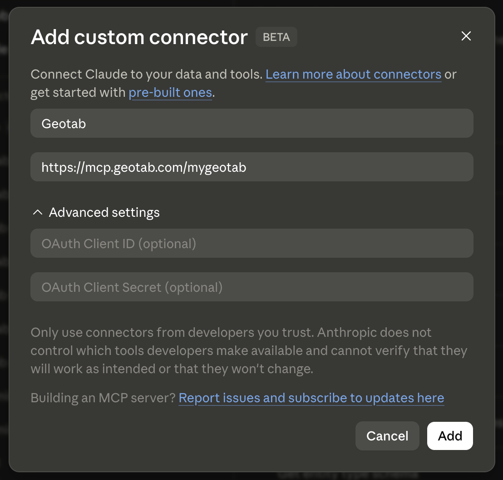

Demo chat ready
Connect the sample fleet to start the guided simulator.
Pick suggested prompts; the transcript will play back with realistic MCP tool calls and grounded fleet data.
Demo chat ready
Pick suggested prompts; the transcript will play back with realistic MCP tool calls and grounded fleet data.
GEOTAB MCP CONNECTOR
This is what it looks like when an AI assistant connects to your live MyGeotab data through Geotab's official MCP server — read fleet state, get diagnoses, and trigger real actions, all in plain English.
Already comfortable with MCP? Jump straight in below.
Tune how the simulator behaves. More controls can live here as the demo grows.
Choose how fast the pre-recorded MCP transcript plays back.
Off by default, so the simulator stays a simulator. Turn it on and the scenarios you explore grow a simulated fleet toward the full 50 vehicles — checkmarks and points included. Stored only in this browser.
Built by Felipe Hoffa — LinkedIn.
🎥 See how the official Geotab MCP connector lets AI assistants investigate fleet issues, automate alerts, and coordinate actions across tools like Gmail and calendars — open on YouTube.
Learn more about the real connector on the Geotab MCP Connector landing page.
New to MCP? The Model Context Protocol is the open standard that lets AI assistants call external tools like MyGeotab — see modelcontextprotocol.io.
Found a bug, or want to see another scenario? Open a GitHub issue.
Three things to do before an AI assistant touches your real fleet data.
Start with Geotab's official walkthrough: Getting started with MyGeotab MCP. The quick version is below.
Option A: find it in your assistant's directory
Option B: add it by URL in any other client
For example, Claude's custom connector:
https://mcp.geotab.com/mygeotab. Leave the OAuth fields
blank — Geotab's server handles that for you.

Microsoft Copilot and other MCP-capable clients follow the same pattern — add a
custom/remote MCP connector, point it at
https://mcp.geotab.com/mygeotab, and sign in with your MyGeotab
credentials when prompted.
Before connecting a production database: the connector inherits your MyGeotab permissions, so the assistant can see anything you can see — including personal data (driver names, employee numbers, emails, precise location history).
Not legal advice — check with your own counsel/compliance team before connecting production data.